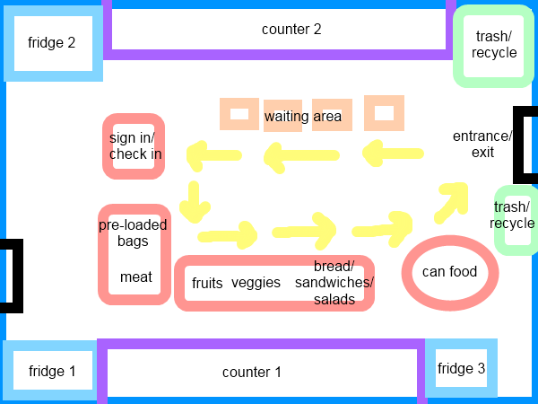

How Do They Distribute it?
Before the Distribution
The agency prepares food before distribution by setting out the food, packing some food into baggies, and carrying various foods from the storage rooms to the distribute room. Volunteers all pitch in some way to make sure the food is set out and ready to be taken.
During the Distribution
South Loop Community Church makes distribution easy. Coming into the building you look at what is considered a square food station.
- You start at the sign in desk. Sign in is where the people who come for food check in so they can keep track of where people are coming from, and how many are coming that day to estimate how much food is needed for the next week.
- After leaving the first station you will then go to the next station where you grab a bag pre-loaded with various non-perishable and dry food.
- The next station is the meat station. Each person receives a single bag (usually) containing one type of meat or main course meal (i.e. pizza, sausages).
- 4th: You approach the next station which has a small collection of fruits and vegetables.
- 5th: You will then come to a station where you have the option of choosing between a fresh salad, or some type of sandwich. Bread are sometimes distributed it also.
- 6th: Lastly you come to the can-food section. You’re allowed to take 3 cans of your choice.
While the food is being distributed the volunteers are either handing out food, working the check in area, or in the back preparing bags.
Agency volunteers are either doing other various behind the scenes chores like packing bags for the future, or they are present at the table, serving people as they walk by such as offering them what is given that day.
Number of people served: 80-90 people
after the distribution:
Frozen food (i.e. meat) is put back into the freezer, cans and other non-perishable items are restocked back on their appropriate shelves and fruits, they are untied from their baggies and reloaded into the refrigerator in one big bag. The leftovers that cannot be preserved (i.e. sandwiches, salads) are given to the volunteers to take home! (yumm!)
Gallery
click the "i" on the top-left screen of the gallery to get more information.